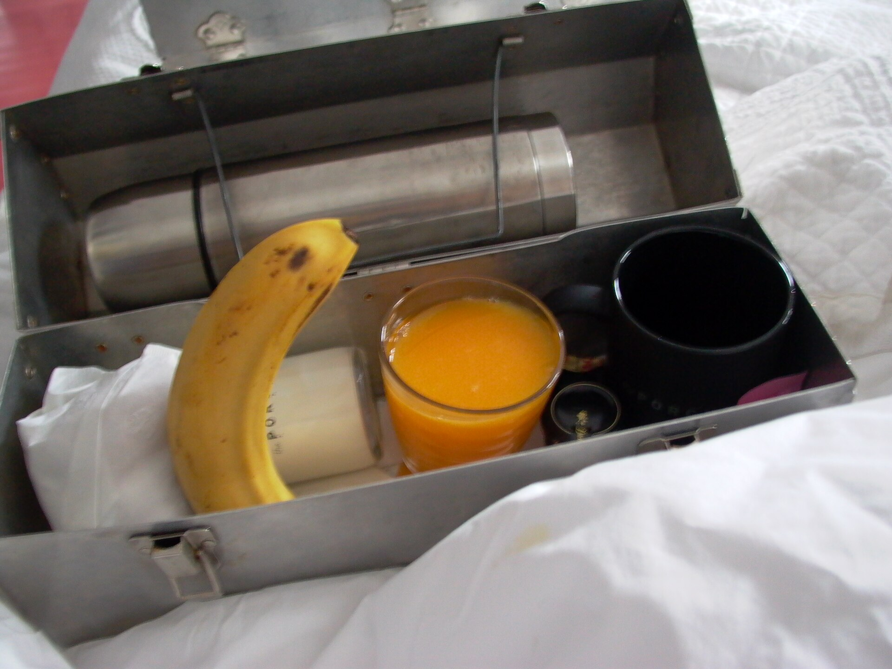

Draft only · noindex,nofollow · PL/EN · P1/P2 remediated
Jak planować jedzenie na dyżur
Lead PL: Jak planować jedzenie na dyżur: plan na długi dyżur, w którym posiłki są realne do zjedzenia między zadaniami. Ten szkic ma pomóc czytelnikowi podjąć kilka małych decyzji w zwykłym tygodniu, bez obietnic leczenia, bez straszenia i bez planu, którego nie da się utrzymać przy pracy, rodzinie albo podróży.

Najważniejsze wnioski
- Najpierw nazwij sytuację: posiłki na dyżur, nocną zmianę lub długi dzień bez opierania się wyłącznie na automacie.
- Pierwszy krok to: podziel jedzenie na główny posiłek, przekąskę białkową i płyny, a nie na jedną wielką porcję na koniec zmiany.
- W praktyce oprzyj posiłki o: kanapka z jajkiem, ryż z warzywami i tofu, jogurt z owocami, zupa w termosie, owsianka nocna, woda i herbata.
- Nie idź w skrót: przypadkowe słodycze z automatu często są skutkiem braku przerwy, nie słabej woli.
Najważniejsza zasada
Jak planować jedzenie na dyżur dotyczy przede wszystkim sytuacji: posiłki na dyżur, nocną zmianę lub długi dzień bez opierania się wyłącznie na automacie. Najlepszy punkt wyjścia to zwykły tydzień, w którym da się powtórzyć podobne posiłki i zauważyć, co naprawdę pomaga. Artykuł nie ustawia jednej idealnej diety; porządkuje decyzje, które mają największą szansę być wykonane.
Mały eksperyment
Pierwszy krok: podziel jedzenie na główny posiłek, przekąskę białkową i płyny, a nie na jedną wielką porcję na koniec zmiany. Dzięki temu zmiana jest mierzalna i nie zamienia się w chaotyczne usuwanie produktów. Jeśli po kilku dniach nie da się jej utrzymać, warto uprościć warunki, a nie dokładać kolejne zakazy.
Baza posiłku
W praktyce przydadzą się: kanapka z jajkiem, ryż z warzywami i tofu, jogurt z owocami, zupa w termosie, owsianka nocna, woda i herbata. Taki zestaw daje punkt zaczepienia w sklepie i w kuchni. Nie każdy element musi pojawić się codziennie; ważniejsze jest, żeby posiłek miał funkcję: sycić, ułatwiać regularność albo zmniejszać liczbę przypadkowych decyzji.
Polski sklep i kuchnia
Przy zakupach warto wybrać dwie wersje: domową i awaryjną. Domowa może być tańsza i bardziej powtarzalna, awaryjna ma ratować dzień, kiedy plan się rozsypuje. Wtedy czytelnik nie musi wybierać między perfekcją a całkowitym porzuceniem nawyku.
Czego nie obiecywać
Najważniejsza pułapka: przypadkowe słodycze z automatu często są skutkiem braku przerwy, nie słabej woli. To szczególnie istotne w treściach zdrowotnych, bo radykalna rada często brzmi atrakcyjnie, ale nie daje lepszego monitorowania objawów ani jakości diety. Lepiej zmienić jeden element i wiedzieć, co się sprawdza.
Jak ocenić efekt
na najbliższy dyżur spakuj jedną rzecz do zjedzenia na zimno i jedną do podgrzania; po dyżurze zapisz, co się sprawdziło. Do obserwacji wystarczą trzy sygnały: głód lub sytość, komfort trawienia oraz łatwość powtórzenia planu. Wyniki badań, masa ciała czy objawy przewlekłe wymagają dłuższego horyzontu niż jeden weekend.
Bezpieczeństwo
praca nocna, choroby przewlekłe i leki wpływające na glikemię wymagają indywidualnego omówienia rytmu posiłków. Ten tekst jest edukacyjny i nie zastępuje diagnozy, leczenia ani indywidualnej konsultacji z lekarzem lub dietetykiem.
FAQ
Od czego zacząć przy temacie: jak planować jedzenie na dyżur?
Zacznij od najprostszej obserwacji: podziel jedzenie na główny posiłek, przekąskę białkową i płyny, a nie na jedną wielką porcję na koniec zmiany. Jedna zmiana daje lepszą informację niż pięć działań wprowadzonych jednocześnie.
Czy potrzebuję specjalnych produktów?
Zwykle nie. Najpierw wykorzystaj proste opcje: kanapka z jajkiem, ryż z warzywami i tofu, jogurt z owocami, zupa w termosie, owsianka nocna, woda i herbata. Produkty specjalistyczne mają sens dopiero wtedy, gdy rozwiązują konkretny problem, a nie tylko wyglądają zdrowiej.
Kiedy dieta nie wystarczy?
praca nocna, choroby przewlekłe i leki wpływające na glikemię wymagają indywidualnego omówienia rytmu posiłków. W takich sytuacjach dieta może być wsparciem, ale nie powinna opóźniać diagnostyki ani leczenia.
Nota bezpieczeństwa
Artykuł ma charakter edukacyjny i nie zastępuje diagnozy, leczenia ani indywidualnej konsultacji medycznej lub dietetycznej. praca nocna, choroby przewlekłe i leki wpływające na glikemię wymagają indywidualnego omówienia rytmu posiłków
How to plan food for a long shift
Lead EN: How to plan food for a long shift: a long-shift plan in which meals are realistic to eat between duties. This draft helps the reader make a few small decisions in an ordinary week, without treatment promises, scare tactics or a plan that collapses around work, family or travel.
Key takeaways
- Start by naming the situation: posiłki na dyżur, nocną zmianę lub długi dzień bez opierania się wyłącznie na automacie.
- The first step is to divide food into a main meal, a protein snack and fluids rather than one huge portion at shift end.
- In practice, build around: egg sandwich, rice with vegetables and tofu, yoghurt with fruit, soup in a thermos, overnight oats, water and tea.
- Avoid the shortcut that random vending-machine sweets are often a break-planning issue, not a willpower failure.
The key principle
How to plan food for a long shift is mainly about this situation: posiłki na dyżur, nocną zmianę lub długi dzień bez opierania się wyłącznie na automacie. The best starting point is an ordinary week in which similar meals can be repeated and patterns can be noticed. The article does not prescribe one perfect diet; it organises the decisions most likely to be carried out.
A small experiment
The first step is to divide food into a main meal, a protein snack and fluids rather than one huge portion at shift end. This makes the change measurable and prevents chaotic food removal. If it cannot be maintained after a few days, simplify the conditions rather than adding more rules.
Meal base
Practical options include: egg sandwich, rice with vegetables and tofu, yoghurt with fruit, soup in a thermos, overnight oats, water and tea. This gives the reader a shopping and cooking anchor. Not every element must appear daily; what matters is the job of the meal: fullness, rhythm or fewer random decisions.
Polish shop and kitchen
For shopping, it helps to choose two versions: a home version and a backup version. The home version can be cheaper and more repeatable; the backup version saves the day when the plan falls apart. This avoids an all-or-nothing choice between perfection and abandoning the habit.
What not to promise
The key trap is that random vending-machine sweets are often a break-planning issue, not a willpower failure. This matters in health content because radical advice often sounds attractive but does not improve symptom tracking or diet quality. Changing one element gives clearer feedback.
How to judge the effect
for the next shift pack one cold option and one reheatable option; after the shift note what worked. Three signals are enough to monitor: hunger or fullness, digestive comfort and whether the plan can be repeated. Lab results, body weight and chronic symptoms need a longer horizon than one weekend.
Safety
night work, chronic disease and medication affecting glucose require individual meal-timing advice. This article is educational and does not replace diagnosis, treatment or an individual consultation with a doctor or dietitian.
FAQ
Where should I start with jak planować jedzenie na dyżur?
Start with the simplest observation: divide food into a main meal, a protein snack and fluids rather than one huge portion at shift end. One change gives clearer feedback than five actions introduced at the same time.
Do I need special products?
Usually not. Start with simple options: egg sandwich, rice with vegetables and tofu, yoghurt with fruit, soup in a thermos, overnight oats, water and tea. Specialist products make sense only when they solve a specific problem, not just because they look healthier.
When is diet not enough?
night work, chronic disease and medication affecting glucose require individual meal-timing advice. In such situations, diet can support care but should not delay diagnosis or treatment.
Safety note
This article is educational and does not replace diagnosis, treatment or individual medical or nutrition advice. night work, chronic disease and medication affecting glucose require individual meal-timing advice